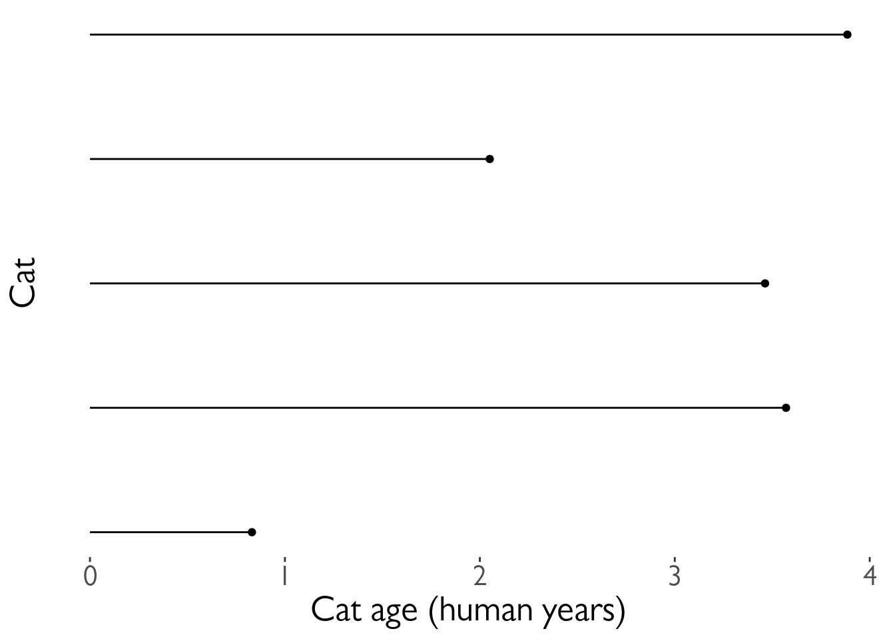
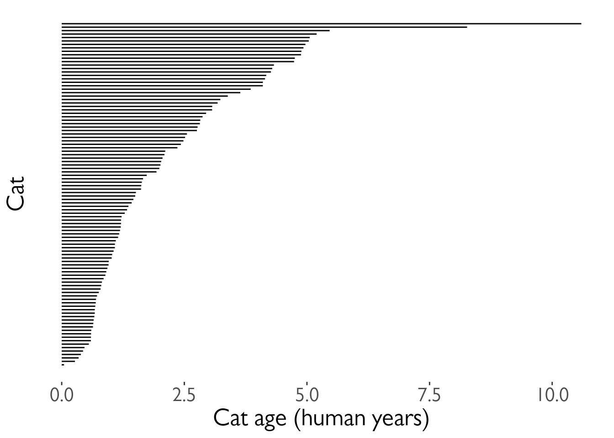
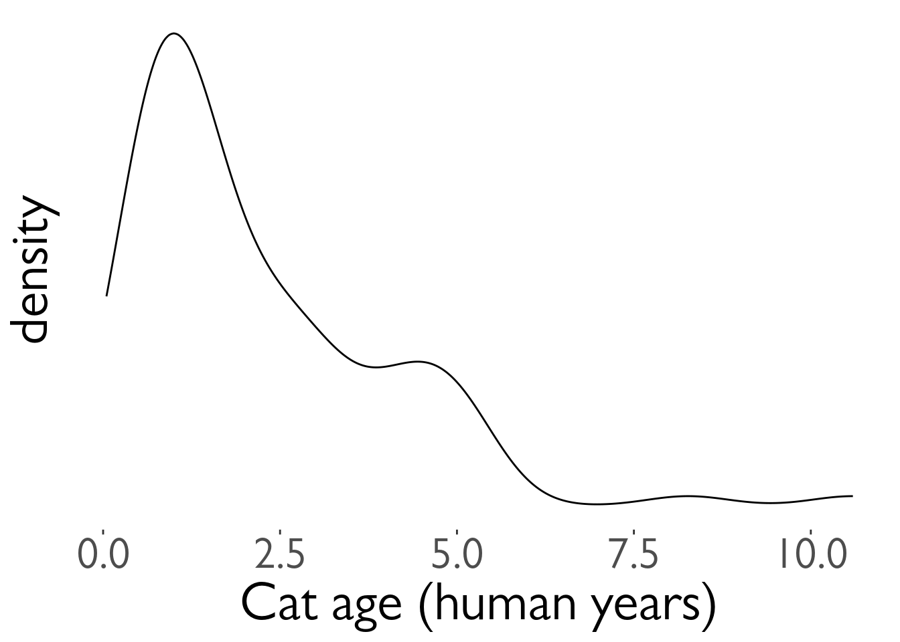
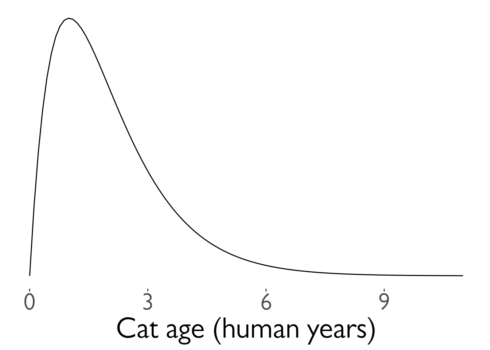
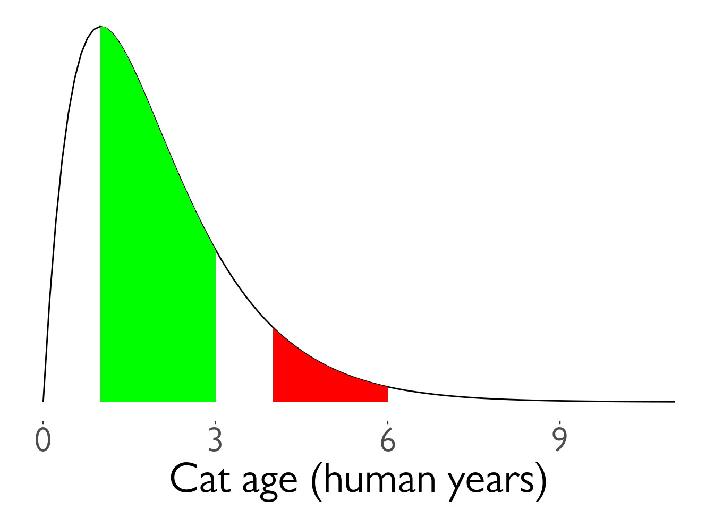
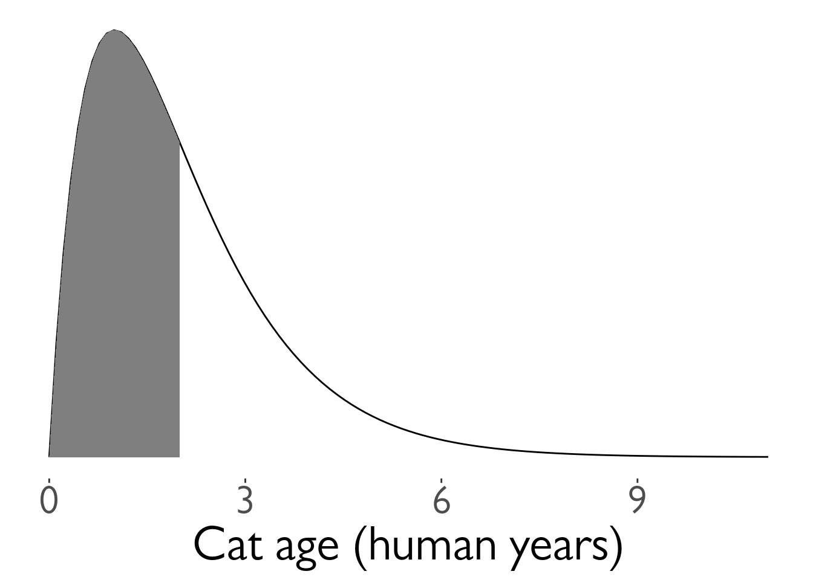
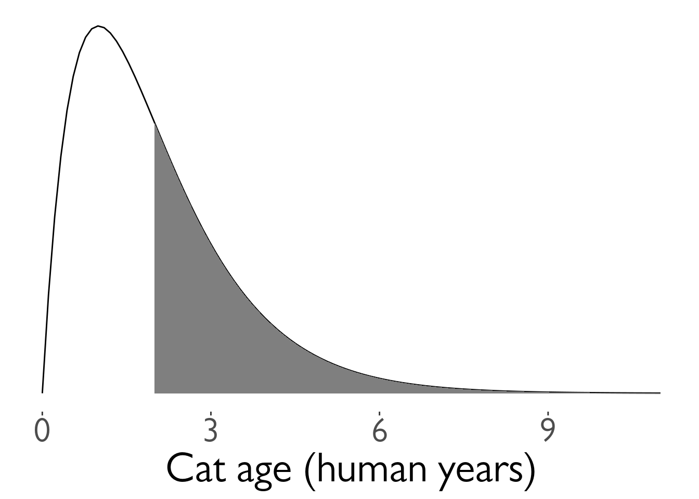
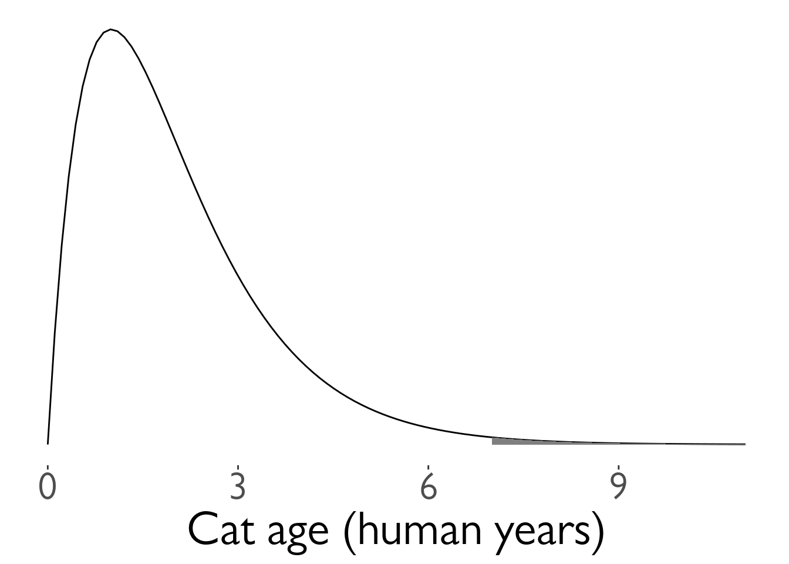

Surviving Lawlessness, Pt. 1
Introduction
Like it or not, things are happening all the time. Even worse, you don’t know when a lot of these things will happen. Sure, you might have a general idea - kids learn to walk around the age of 1 or so, students tend to graduate after 4 years of undergraduate school, and dogs learn to shake after a certain number of treats and head scratches - but you don’t know exactly when these things happen. However, if you’re clever, you can work up a handful of tools to help predict when something might happen. You’ve given your dog 20 treats and head pats - what is the probability that he’s finally going to nail the handshake thing on the next one? Or maybe you provide a group of students with a dedicated tutor - do they graduate faster? These are the kinds of questions you can answer if you are willing to wade into the mires of statistics. Don’t worry. We’re going to do this together. I even brought you a snorkel.
Definitions
You - like me - are only learning about this so you can impress all your friends at dinner parties. You go to many of these parties because you are very popular and normal. But in order to woo your friends, you need to know what to call these things.
All the above mentioned scenarios - dog shaking, baby walking, student graduating - they’re events, and they take a certain amount of time to happen. So the analysis of them is called time-to-event analysis. Easy enough. Sometimes, in the context of human well-being (or lack thereof) it’s called survival analysis - but they’re the same thing.
Teaching cats to sing
A book about time-to-event analysis might get a little hung up on things that break, die, or wear out. That’s a little depressing. So when possible, I’m going to talk about other subjects. Particularly cats. Plus, thinking about how this applies to, say, human survival is a good mental exercise.
Let’s imagine that all cats can sing. You haven’t heard many cats sing because no one has bothered to try to train them. But with enough training, all cats can sing. Note - no cats are born able to sing. They need training1.
You’ve been training your cat since it was born, and it’s been a couple months now: no singing. Should you be worried?
The probability density function
You poke around the neighborhood and see how your neighbors are faring teaching their cats to sing. They’ve all been training their cats since birth2 and told you the age that the cat started singing. You make a little plot:
It like most cats are taking more than a year or two to learn how to sing. Your fears are put at ease for a moment, but you’re not an idiot: you know just a few samples can be misleading3. You begin a cat census, asking everyone who has started training their cat from birth how long it took them for their cats to sing. The best you can do is scrape together 100 people 4:

It looks like somewhere between 1-2 years is the sweet spot for when most cats get their voice. You think about plotting these results a different way - a density histogram.

It looks a bit lumpy. You want to know if there truly is a ‘second wind’ of learning at around 5 years or if it’s just statistical noise - but you really left it all out on the field when you made all those calls for the cat census. You don’t think you could gather even more cat data.
Whenever you are faced with these issues, you know just where to go: the lady with completely black eyes that lives in the woods in a dilapidated cottage. She give you (in exchange for a surprisingly large amount of viscera from forest fauna) a beautiful plot5 that shows the theoretical distribution of time-to-cat-singing. It’s what you would have gotten if you had done an infinite cat census:

You notice that the highest peak is at around 1 year of age. This is around the time where most cats will learn to sing, but it looks like it’s possible for cats so sing earlier and later, too. (Note that I mentioned earlier that ALL cats will learn how to sing.)
This plot is the visual representation of a probability density function, or a pdf6. To explain why it’s called that, a trick question: What is the probability that a cat will learn to sing on the instant of its 2nd birthday? Answer: 0. Why? Because that instant is such a very very very very (etc) short amount of time. I don’t care that the plot shows a high peak at that point - if we’re betting on when your cat would sing, and you say ‘the instant it turns 1’, I’m betting everything I’ve got against you.
To explain by way of analogy, density can also refer to materials. Osmium is the densest naturally occurring material on Earth with a density of 22.59g/cm³. So, tell me: how heavy is it in the smallest possible unit of volume? I’m not even talking mm, or nm - not even angstroms. I’m talking about an infinitesimally small point in space. You know the answer. It’s 0g.
The probability density relates to our physical density in that physical density measures mass over volume, but this particular, time-to-event probability density measures events over time. There are other probability densities - like people’s heights, for instance - that do not measure densities over time. But we will largely be concerned with events/time densities.
Doing stuff with the pdf
Water has a convenient density of around 1g/mL. Knowing this, and knowing someone has 10mL of water, you can tell them that they have 10g of water.
Just like you can find out how much mass of a substance there is by knowing the volume and density, you can also figure out the probability of an event happening by knowing the pdf and the time range.
Before we go any further, some math notation. I’m going to call the pdf \(f\), and some arbitrary time \(t\). So \(f(t)\) is the probability of some event at time \(t\) (which is, remember, 0).
This function isn’t as useless as it seems. If we multiply the pdf by time, we should get the probability of an event happening over that range of time. Except…our probability varies over time. With physical density, it didn’t vary across the volume of the object (provided it’s a pure substance), so we could just multiply two constant numbers (the volume times the density) together and call it a day. We could do that if cats learned to sing with a constant probability over time, but they don’t: as we saw, there’s a higher probability at age 1, and lower everywhere else. The probability of a cat learning to sing from age 4 to 6 is much lower than from age 1 to 3.

It’s almost like…it matters…how much area is under the curve
Uh oh
Yeah. I know. Calculus. Integrals, to be specific. Unfortunately, they’re very good at finding the area under the curve in a very general way.
Integrating the pdf
One useful function to have to know what the probability that Fluffy should have learned to sing by now - that is, the integral from birth ( \(t = 0\) ) to now ( \(t\) ).

\[ F(t)=Pr(T≤t)=\int_{0}^{t}f(x)dx \]
We call that function \(F(t)\). In the medical field, you might consider this function the probability that a patient will have died between, say, when they were diagnosed ( \(t = 0\) ) and now ( \(t\) ).
Another useful function is one that tells you the probability of Fluffy still not being able to sing at some time ( \(t\) ). This is the integral from \(t\) to \(∞\).

\[ S(t)=Pr(T≥t)=\int^{∞}_{t}f(x)dx \]
In the medical field, this might be the probability that a patient will survive until at least time \(t\). This is why it’s called the survival function and is denoted by \(S\).
\(S(t)\) has some important properties. It always goes down, never up - also known as monotone decreasing. It also starts at 1 (that is, \(S(0) = 1\). And it ends at 0 ( \(S(∞) = 0\) ). Thus, no cats are born singing, and all cats can learn to sing.
Side note - \(S(t)\) /has/ to be monotone decreasing because it is the integral of a function ( \(f(t)\) ) that can never be negative7. \(f(t)\) can never be negative, because negative probabilities do not make sense. It either happens or it doesn’t - it can’t ‘anti-happen’.
So, \(F(t)\) is the probability that an event will have occurred by time \(t\), while \(S(t)\) is the probability that an event will NOT have occurred by time \(T\).
It’s important to note that if your patient had a 90% chance of not making it to time \(t\) (that is, \(F(t) = 0.9\)), yet they are still alive, it does not mean that your patient has only a 10% chance of dying in the future! That would be bonkers. You roll the dice on that patient and they have a 9/10 chance of immortality? No. What this means is that in all the patients seen previously, 90% of them didn’t make it this long, and 10% of them made it longer. Unfortunately, in the end, death still comes for us all. We’ll learn how to properly calculate their probability of dying in the future in the next section.
Conditional probability
So, a cat has trained for 7 years and sits in front of you, utterly mute. Suppose we naively tried to use our pdf to determine the probability of this cat learning to sing some time in the future:

We calculate the area under the curve to be…0.007. Or 0.7%. Are we doomed to have a cat that can’t sing???
No. Remember, we assumed that all cats will EVENTUALLY learn to sing. But how do we take this in to account? We have to take into account all the time that the cat HASN’T learned how to sing. Another way to say this is that it needs to be conditional on the fact that the cat has existed this long without learning to sing. It’s kind of like going up to a red light and waiting there for a long time. Each second that ticks by means the probability of it turning green increases, because it has to turn green eventually8.
Let’s put the question we’re actually asking into words:
Given that our cat has not yet sung at age 7, what is the probability that this cat will learn to sing in the next…10/5/1 year(s)?
Or rather:
\[ Pr(t≤T < t + Δt|T≥t) \]
The bar ( \(|\) ) means ‘given’. So, assuming that our cat has gone this long without singing ( \(| T≤t\) ) what is \(Pr(t≤T < t + Δt)\) (the probability that it’ll learn how to sing in this next time frame ( \(Δt\) ))?
This is what we WANT. How we get it requires a little rearranging - but we can do it. To pull this off, we need to know Bayes theorem. This guy Bayes is super hot right now as well as super dead, but we don’t need to go in to that. What we need to know is that he proved this:
\[ Pr(A|B) = \frac{\textcolor{red}{Pr(B|A)}\textcolor{blue}{Pr(A)}}{\textcolor{green}{Pr(B)}} \]
If we compare it to our previous equation, we can match it up by setting \(A = t≤T < t + Δt\) and \(B = T≥t\). Substituting in our own \(A\) and \(B\), we get:
\[ Pr(t≤T < t + Δt|T≥t) = \frac{\textcolor{red}{Pr(T≥t|t≤T < t + Δt)}\textcolor{blue}{Pr(t≤T < t + Δt)}}{\textcolor{green}{Pr(T≥t)}} \]
We can work with this. Let’s go through the chunks one at a time:
\[ \textcolor{red}{Pr(T≥t|t≤T < t + Δt)} \]
Reading this out: What is the probability that our cat has learned to sing either now or in the future, given that our cat has learned to sing now or a little bit in the future?
You might be able to sense the repetition here. What’s the probability of something happening given it’s happened? Well…it’s guaranteed. It happened. 100%. 1.
\[ \textcolor{red}{Pr(T≥t|t≤T < t + Δt)} = \textcolor{red}{1} \]
Next chunk:
\[ \textcolor{blue}{Pr(t≤T < t + Δt)} \]
This is the probability that your cat will sing between now and a bit in the future. We know this too - it’s from the pdf. It’s just a tiny integral:
\[ \textcolor{blue}{Pr(t≤T < t + Δt)} = \textcolor{blue}{∫_{t}^{t + Δt}f(x)dx} \]
And finally:
\[ \textcolor{green}{Pr(T≥t)} \]
We’ve seen this before, exactly - It’s \(S(t)\)
\[ \textcolor{green}{Pr(T≥t)} = \textcolor{green}{S(t)} \]
All together:
\[ Pr(t≤T < t + Δt|T≥t) = \frac{\textcolor{red}{1}×\textcolor{blue}{∫_{t}^{t + Δt}f(x)dx}}{\textcolor{green}{S(t)}} \]
This is the probability of experiencing some event in a given time frame, given no event has been observed previously. This last ‘conditional’ part is important, since a dead guy has no chance of dying in the future.
The hazard rate
It can be mathematically useful to determine the ‘instantaneous rate’ of an event. This is the hazard rate, or hazard function. The interpretation of this is quite challenging, and in my personal opinion it tends to be more useful when used for other things, rather than as itself.
It’s just the probability we calculated above, divided by the same time frame ( \(Δt\) ), as the time frame approaches 0. A higher value means greater imminence of the event, a smaller number means lower imminence. It can go up and down, but it can’t be negative. It can be way, way bigger than 1, so it’s not a probability.
\[ h(x) = \lim_{Δt → 0} \frac{∫_{t}^{t + Δt}f(x)dx}{S(t)} = \frac{f(x)}{S(t)} \]
Often, hazard functions go up over time - like in our cat example, and also in human mortality. But they don’t always need to go up. Sometimes the longer you’ve been around, the longer you WILL be around (known as the ‘Lindy effect’). But the cumulative hazard DOES need to go up. So while it might be less risky to at each moment to keep on going, the amount of risk you experience is still non-zero, and it does get added to the ledger of risk you’ve experienced all time. It’s like the risk of making a mistake when learning to play the piano. If you’ve miraculously managed to never make a mistake during the beginning stages, the risk of you making a mistake as you get better goes down. But over a long enough time, you still risk making a mistake, even if you are quite good.
I’m not super jazzed about a practical interpretation of hazard functions, but here I go:
This hazard function represents the expected number of events for a given time period, assuming that the event hasn’t already happened. We could interpret \(h(10) = 100\) to mean that we would expect a 10 year old cat that hasn’t learned to sing 100 times over during the next unit of time (in this case, years). That is, if our cat learned to sing, and then had the memory deleted from its memory, it could learn, then forget, then learn, then forget..100 times over during the course of a year.
The integral of the hazard rate - known as the ‘cumulative hazard’ - is denoted by
\[ H(t) =∫_{0}^{t}h(x)dx \]
It’s essentially ‘how much risk have you experienced from time 0 to now’
All previous functions in terms of the hazard rate
S(x)
Really, all these equations are different ways of representing the same data, when you get right down to it. As such, you can express \(S(t)\) and \(f(t)\) in terms of \(h(t)\), giving you a handy ‘one equation to rule them all’.
You can do this with a little work, first remembering that we showed that
\[ h(x) = \frac{f(x)}{S(x)} \]
If you remember that
\[ S(t) = ∫_{t}^{∞}f(x)dx \]
You can determine that
\[ S^{′}(t) = \frac{d}{dt}∫_{t}^{∞}f(x)dx = 0 - f(t) ⇒ \]
\[ f(t) = -S^{'}(t) \]
(The arrow ( \(⇒\) ) means ‘implies’, or rather, ‘it follows’, or some other fancy phrase that means ‘this next thing is true because of what I just said’)
Now we plug this back in to our previous equation, giving
\[ h(t) = \frac{f(t)}{S(t)} = \frac{S′(t)}{S(t)} \]
If you remember, the derivative of \(ln(x)\) is \(1/x\). If you remember the chain rule, you’ll note that \(\frac{S′(t)}{S(t)}\) is just the derivative of \(-ln(S(t))\). So we can write:
\[ h(t) = \frac{S^{′}(t)}{S(t)} = -\frac{d}{dt}ln(S(t)) \]
We can solve for \(S(u)\) where \(u\) is some specific time (I’d normally use \(t\), but we’re already using it here as just some variable, like \(x\)) by integrating both sides from \(0\) to \(u\):
\[ ln(S(t))\vert_{0}^{u}=-∫_{0}^{u}h(t)dt \]
This is equal to:
\[ ln(S(u)) - ln(S(0)) \]
We know that survival chance must start at 1, so \(S(0) = 1\), and \(ln(1) = 0\). So,
\[ ln(S(u)) - ln(S(0)) = ln(S(u)) = -∫_{0}^{u}h(t)dt \]
Raising both sides by \(e\), we get
\[ S(u) = e^{-∫_{0}^{u}h(t)dt} \]
f(x)
You can also use the fact that
\[ h(t) = \frac{f(t)}{S(t)} ⇒ \]
\[ S(t) = \frac{f(t)}{h(t)} \]
to describe \(f(u)\) in terms of \(h(t)\)
\[ S(u) = \frac{f(u)}{h(u)} = e^{-∫_{0}^{u}h(t)dt} ⇒ \]
\[ f(u) = h(u) e^{-∫_{0}^{u}h(t)dt} \]
F(x)
\(F(t)\) is pretty simple as well, since it’s just \(1 - S(t)\) (or more appropriately, but equivalently, \(S(t) = 1 - F(t)\))
\[ S(u) = 1 - F(u) = e^{-∫_{0}^{u}h(t)dt} ⇒ \]
\[ F(u) = 1 - e^{-∫_{0}^{u}h(t)dt} \]
We did it. We described all of our big equations in terms of the hazard function.
Summary
- \(f(x)\): The probability density function of events across time
- \(F(x)\): The probability of experiencing an event by time \(x\)
- \(S(x)\): The probability of not experiencing an event by time \(x\)
- \(h(x)\): The hazard function. Interpretation is tough, but essentially the ‘amount of risk’ for an event experienced at time \(x\).
- \(H(x)\): The cumulative amount of ‘risk’ experienced up to time \(x\)
Footnotes
I’m setting up these rules because they are involved in math later. Don’t worry about it now.↩︎
The cat’s birth, not theirs↩︎
Plus you know this information will NOT be motivating for your cat↩︎
This is not a popular hobby↩︎
Which as we all know is - by itself - worth all the viscera in the world↩︎
Perhaps somewhat confusingly for fans of the widely used Adobe file format↩︎
You’ll need to think about the relationship between a curve and its integral - but basically it goes up whenever it ‘adds’ more area under the curve and goes down whenever it ‘subtracts’ area under the curve - which happens when the curve being integrated goes below 0↩︎
Yes, I understand that traffic lights aren’t probabilistic and are probably on some stupid timer. I don’t care. Pretend like they are.↩︎